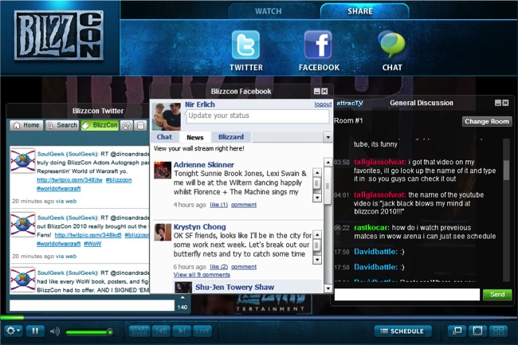
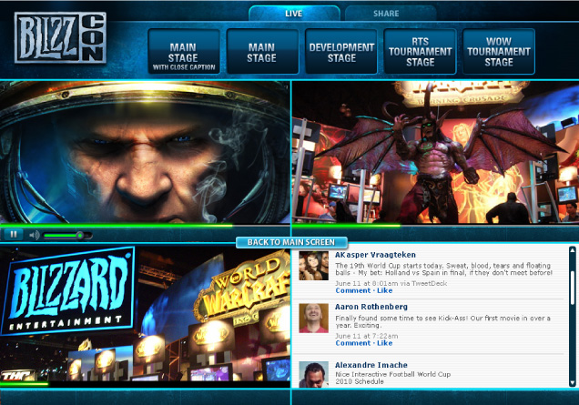
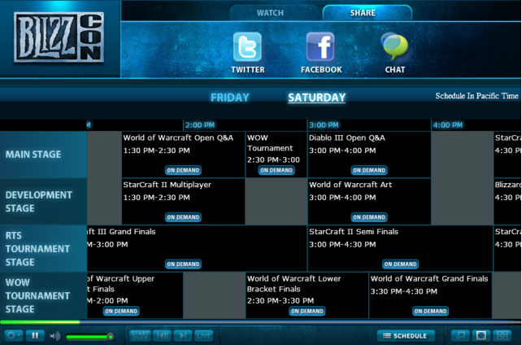

<? 
	$pagetitle = "RayV Player";
	$section = 'ecosystem';
?>
<?php include '../includes/header.php'; ?>

<?php include '../includes/rcol.php'; ?>
<div id="lcol">
	<div id="lcolinner">
		<h1>RayV Player<sup>&trade;</sup></h1>
		<h3 class="subh1">A Multi Screen Interactive Video Player</h3>
		<div class="bodycopy clearfix">
			<p class="firstp">The RayV Player is a unique media player combining the best of TV with the Internet, resulting in an unparalleled interactive viewing experience.</p>
			<p class="firstp">Available on all IP devices – from Connected TV's to PC's, tablets, and phones – users can browse, chat and interact simultaneously, all without disrupting the superb viewing experience.</p>
			<a href="experience/experience.html" class="readmore" >Experience the RayV Player</a>
		</div>
		<div id="productscroll">
			<div class="iconscrollnav">
				
				
				
				
				
			</div>
			<h2>Screenshots</h2>
			<!-- root element for scrollable -->
			<div class="scrollable" id="productscrollable">   

				<!-- root element for the items -->
				<div class="items">
					<div class="scrollitem">
						<div class="scrollimg"></div>
						<p><strong>RayV PC/ Mac Player</strong> – Quick Tab Navigation, DVR, Slow Motion, Instant Replay, Start Over, VoD and Search, Floating Interactive Widgets, Display Modes (Detach, What’s On)</p>
					</div>
					<div class="scrollitem">
						<div class="scrollimg"></div>
						<p><strong>What’s on View</strong> – Intuitively and visually navigate between live and on-demand content.</p>
					</div>
					<div class="scrollitem">
						<div class="scrollimg"></div>
						<p><strong>Picture-in-picture</strong> – Drag a channel from the top bar of the Player to view picture-in-picture mode.</p>
					</div>
					<div class="scrollitem">
						<div class="scrollimg"></div>
						<p><strong>Customizable UI</strong> – Customize the Player skin (BlizzCon 2010 shown above) and the share tab with integrated Facebook, Twitter, and Chat.</p>
					</div>
					<div class="scrollitem">
						<div class="scrollimg"></div>
						<p><strong>Split Screen</strong> – Your personal dashboard – Split the screen into four and drag-and-drop live channels, on-demand clips or interactive widget to any of the four screens</p>
					</div>
					<div class="scrollitem">
						<div class="scrollimg"></div>
						<p><strong>Integrated EPG</strong> – Switch between live channels, watch on-demand clips and set programming reminders</p>
					</div>
					<div class="scrollitem">
						<div class="scrollimg"></div>
						<p><strong>RayV Mobile iOS</strong> – Live and VoD streaming, intuitive horizontal and veritcal channel switching, EPG, and Favorites</p>
					</div>
					<div class="scrollitem">
						<div class="scrollimg"></div>
						<p><strong>RayV Mobile Android</strong> – Live and Vod Streaming intuitive horizontal and vertical channel switching, Favorites quick links</p>
					</div>
					<div class="scrollitem">
						<div class="scrollimg"></div>
						<p><strong>RayV Player for Tablets</strong> – unified experience on all tablets (iOS , Android), fast channel switching, High and low resolutions,VoD, EPG ,Favorites</p>
					</div>
					<div class="scrollitem">
						<div class="scrollimg"></div>
						<p><strong>RayV TV Set-Top Boxes</strong> – Stream video from any Internet connected TV across a wide range of STBs with built-in DVR, fast channel switching, high resolution, and more.</p>
					</div>
				</div>
			</div>
			<!-- scroll navigation -->
			<div id="prodscrollnav">
				<div id="prodscrollnavinner">
					<a class="next browse right ir" onselectstart="return false;">&larr;</a>
					<div class="navi">
						<a href="#0" class="active"></a>
						<a href="#1" class=""></a>
						<a href="#2" class=""></a>
						<a href="#3" class=""></a>
						<a href="#4" class=""></a>
						<a href="#5" class=""></a>
						<a href="#6" class=""></a>
						<a href="#7" class=""></a>
						<a href="#8" class=""></a>
						<a href="#9" class=""></a>
					</div>
					<a class="prev browse left ir" onselectstart="return false;">&rarr;</a>
					<br clear="all">
				</div>
			</div>
		</div>
		<div class="tabwrapper clearfix">
			<ul class="tabs">
				<li><a href="#tab1">Experience and Functionality</a></li>
				<li><a href="#tab2">Multi-platform</a></li>
				<li><a href="#tab3">Interactivity</a></li>
				<li><a href="#tab4">Advertising</a></li>
				<li><a href="#tab5">Customization and Integration</a></li>
			</ul>
			<div class="tab_container">
				<div id="tab1" class="tab_content">
					<p><strong>Viewing Modes</strong> – View the RayV Player as a plugin embedded in a web page,  as a standalone desktop application, or as a widget within another application.</p>
					<p><strong>Player controls</strong> – Intuitive pause, stop, rewind, start over, DVR, picture-in-picture, and instant replay functionalities create a highly interactive user experience.</p>
					<p><strong>Live and VoD</strong> – Provide live and VoD content all within the same Player.  Quick tab navigation lets end users seamlessly switch between live streams and on-demand video.</p>
					<p><strong>Split Screen View</strong> – Our drag-and-drop feature lets users watch up to four different channels simultaneously, all on the same screen.</p>
					<p><strong>Multi channel fast zapping</strong> – (a top bar with easy tab navigation functionality). Stream multiple channels to the Player with built-in fast channel switching.</p>
					<p><strong>Adaptive Bandwidth</strong> – both automatic and manual.  Utilize one of RayV’s four standard streaming qualities or manually support a stream quality of your choice.</p>
				</div>
				<div id="tab2" class="tab_content">
					<p>The RayV Player is device independent and deployable over multiple platforms and devices including:</p>
					<ul>
						<li>Computers/OS: Mac, Windows, Linux.</li>
						<li>Mobile: iOS (iPhone) , Android</li>
						<li>Tablets – iOS (iPad), Android</li>
						<li>Set-Top Boxes – Sigma, Atom, Broadcom</li>
						<li>Game Consoles: PS3, Xbox 360</li>
						<li>Connected TV's </li>
					</ul>
				</div>
				<div id="tab3" class="tab_content">
					<p>RayV APIs allow the development and deployment of interactive widgets on top of video streams.  Widgets are available both as a floating widget on top of the video or as a drag-and-drop item in split screen mode. (see screen shots)</p>
					<p>Widgets available to-date include:</p>
					<p><strong>Facebook Connect</strong> – Connect with friends while watching live TV streams.</p>
					<p><strong>Twitter</strong> – View live information streams related to the channels you are watching and retweet the channel to friends.</p>
					<p><strong>Chat</strong> – Join chat rooms talking about the channel in real-time.</p>
					<p><strong>Interactive games</strong> – Play games with other viewers in real-time.</p>
					<p><strong>New alerts</strong> – Get news alerts in real-time while watching the channels (both in video format and text).</p>
					<p><strong>Picture-in-picture</strong> – View another channel in a small window in parallel. </p>
				</div>
				<div id="tab4" class="tab_content">
					<p>Seamless integration with third party advertising platforms for serving in-stream ads</p>
					<p><strong>Multiple supported ad formats</strong> – Incorporate multiple ad formats into each broadcast including: </p>
					<ul>
						<li>Text</li>
						<li>Display ads</li>
						<li>Overlays</li>
						<li>Pre-rolls</li>
						<li>Post-rolls</li>
						<li>In-stream</li>
					</ul>
					<p><strong>Local Contextualization</strong> – Locally contextualize ads during broadcasts.</p>
					<p><strong>Utilize Ad Network of choice</strong> – Serve ads through one of RayV’s integrated partners or a network of choice using the RayV Dashboard. RayV supports all major ad serving bureaus.</p>
				</div>
				<div id="tab5" class="tab_content">
					<p><strong>Customize</strong> – The RayV Player can be fully customized and skinned for a white label approach. RayV can also provide clients an SDK for a build-your-own user experience on top of the RayV engine (more detail on the technology side). With FULL control on all the controls <a href="documentation/manuals.html#player">(click here for the RayV Player Manual)</a></p>
					<p><strong>Integrate</strong> – RayV fully supports the distribution of the player to affiliate sites and other distribution partners. RayV has a simple cut and paste generator (like the ones used on Youtube) allowing you to distribute the player easily while keeping track of all the activity <a href="documentation/manuals.html#player">(for more details please see the RayV Player Manual)</a>.</p>
				</div>
			</div>
		</div>
	</div>
</div>
<?php include '../includes/footer.php'; ?>
